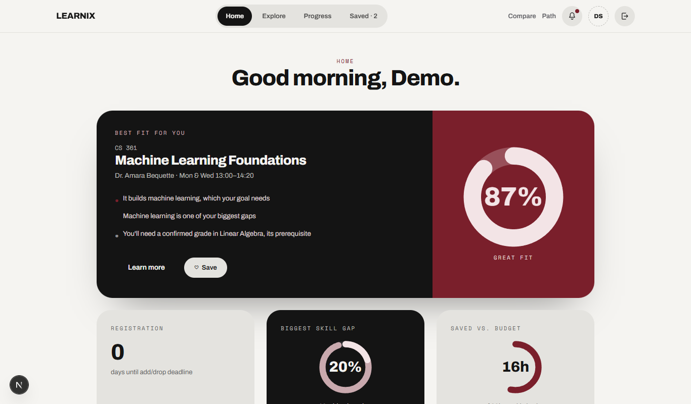
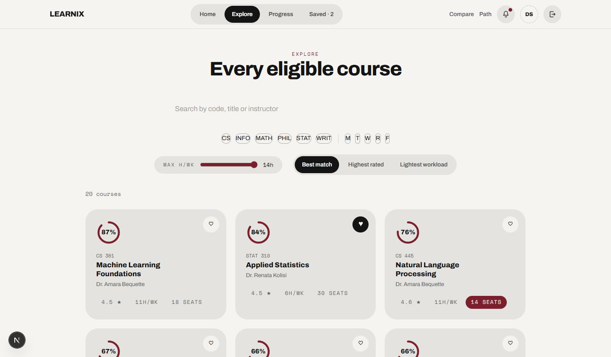
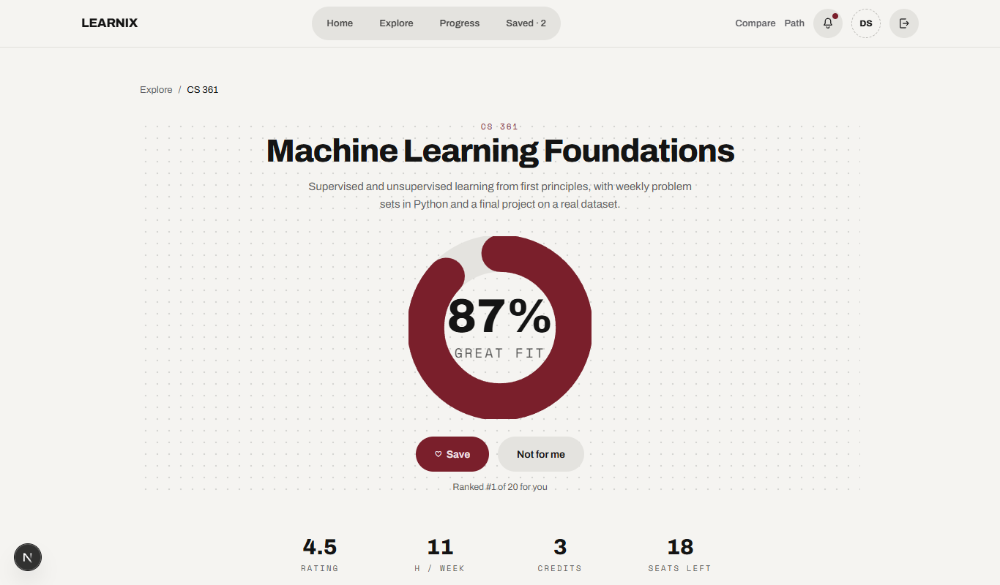
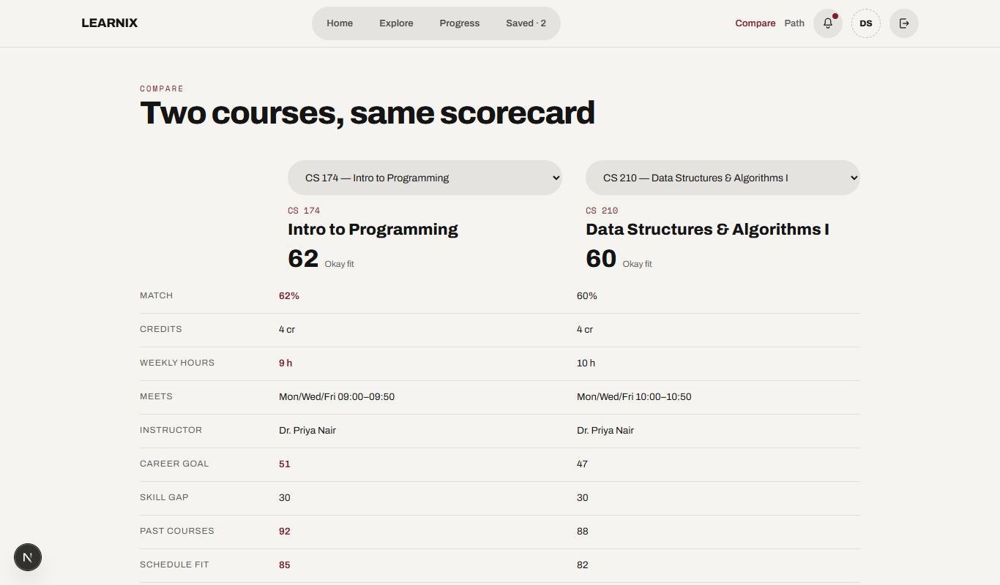
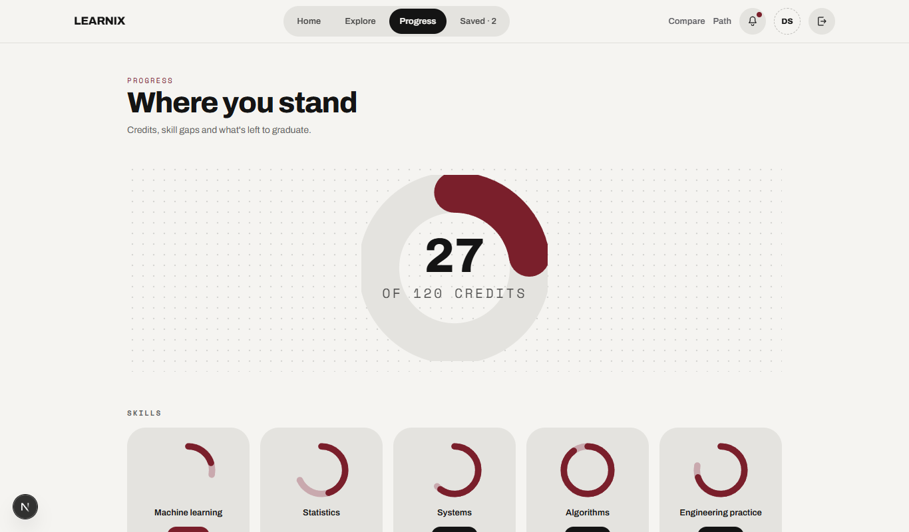
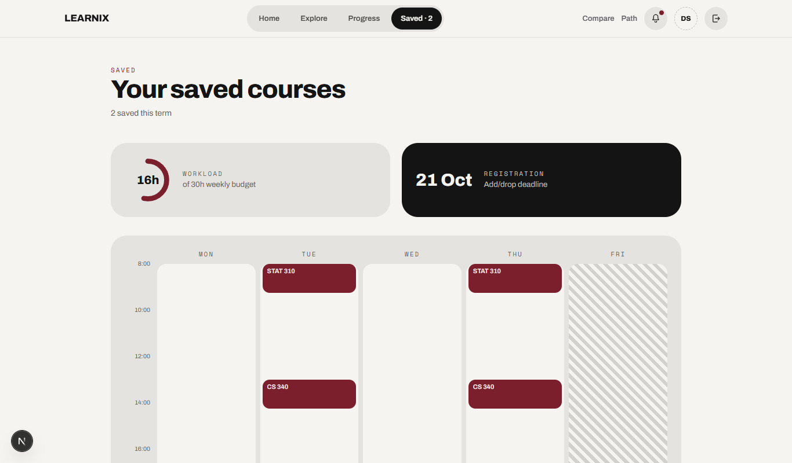
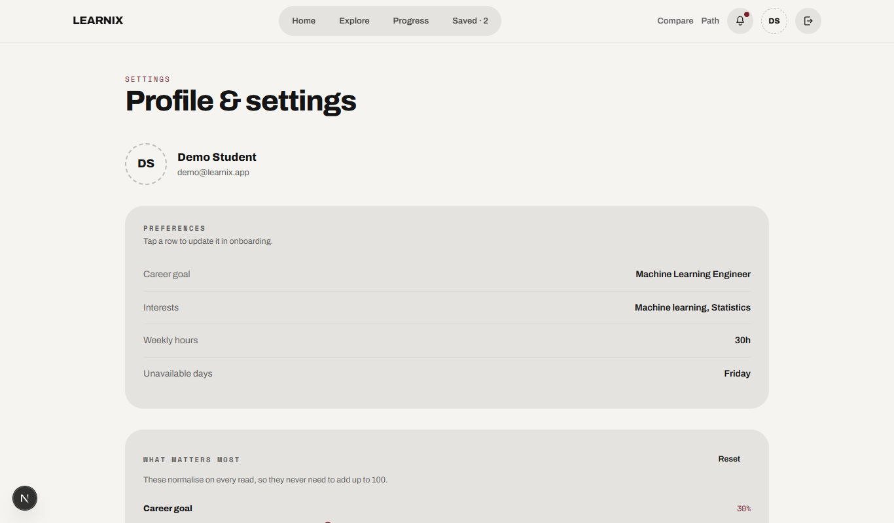
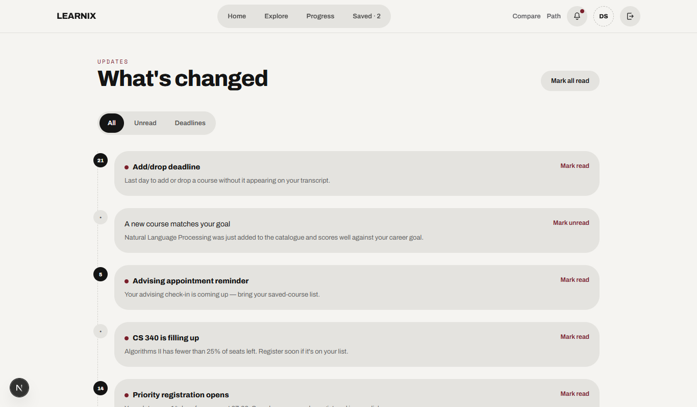

Choosing courses each term is a decision students make with incomplete information: which course actually moves them toward the career they want, which ones conflict with their schedule, which ones they are even eligible for given their transcript. Learnix is a full-stack web application that solves this as a content-based, multi-criteria recommendation problem. Every course in the catalogue carries a skill vector across five axes — machine learning, statistics, systems, algorithms, and engineering practice — and every career target carries the same vector. Learnix scores each eligible course against a student's declared career goal, their actual transcript-derived skill level, their stated interests, their remaining prerequisite and schedule constraints, and a student-adjustable set of weights, then explains every score in plain language rather than presenting an opaque number.
Unlike collaborative-filtering recommenders that need large historical interaction data, Learnix's approach is fully explainable and cold-start-safe: a brand-new student with no history still gets ranked, reasoned recommendations from day one, and can steer the ranking logic itself by adjusting five weight sliders rather than being at the mercy of a black box.
Degree-program advising is typically handled by static degree-audit sheets and generic catalogue browsers that list every course but rank none of them. A student trying to decide what to take next term has to manually cross-reference their transcript against prerequisites, estimate whether a course's time slot fits their week, and guess whether a course actually serves the career they are aiming for. This is slow, error-prone, and gives no reasoning a student can inspect or challenge.
The problem Learnix addresses has four parts:
| Layer | Technology | Why |
|---|---|---|
| Framework | Next.js 16 (App Router, Turbopack) | Server Components for data-heavy screens, file-system routing, built-in caching primitives. |
| Language | TypeScript (strict) | End-to-end type safety from the database to the UI. |
| UI | React 19, Tailwind CSS v4, Framer Motion | Component-driven UI; utility-first styling via a design-token theme layer; accessible, reduced-motion-aware entrance animation. |
| Database | PostgreSQL | Relational integrity for transcripts, prerequisites and per-student state; survives redeploys on serverless hosts (unlike SQLite). |
| ORM | Prisma | Type-safe schema, migrations, and query layer. |
| Auth | Auth.js (NextAuth v5), Credentials provider + bcrypt | Session-based auth with edge-safe route protection via middleware. |
| Validation | Zod | Runtime-validated form input on every server action. |
| Client state | Zustand | The one piece of genuinely client-only state — the toast/undo pattern. |
| Testing | Vitest + Testing Library | Unit tests for the scoring engine's pure functions. |
Learnix follows a layered server-first architecture. React Server Components fetch data directly from Prisma at render time — there is no separate REST/GraphQL API layer for the main app, which removes an entire class of client/server drift bugs. State-changing operations go through typed Next.js Server Actions, which validate input with Zod, write through Prisma, and trigger targeted cache revalidation.
| Module | Responsibility |
|---|---|
lib/scoring/ | The recommendation engine itself — skill vectors, subscore formulas, weighted ranking, band classification, reason generation, exclusion and schedule-conflict detection. Pure functions with no framework or database dependency, fully unit-tested. |
lib/data/repository.ts | The single seam between the app and Postgres. Every read and write in the system passes through here, mapped into the plain shapes the scoring engine expects. |
lib/store/useToastStore.ts | The one client-only piece of state (toast + undo); everything else that matters is persisted server-side per student. |
auth.ts / lib/auth.config.ts / proxy.ts | Auth.js v5 session management, with an edge-safe config used by the proxy for route protection before a request ever reaches a page. |
prisma/schema.prisma | The full relational schema — see Section 6. |
app/(app)/ | The authenticated app shell: top navigation plus all nine student-facing screens, gated both at the edge (middleware) and in the route group's own layout. |
app/onboarding/ | A four-step wizard, deliberately rendered outside the app shell so nothing distracts a new student from setup. |
A typical page request — say, opening Home — resolves the session, confirms the student has completed onboarding, then fetches the course catalogue, the student's scoring context (skills, weights, saved/hidden courses, schedule constraints) and recent notifications in parallel rather than sequentially. The scoring engine runs synchronously over that data to rank courses, and the result streams to the browser as server-rendered HTML.
The schema is fully relational and normalized. Degree-requirement progress and GPA are deliberately not stored — they are derived at query time from the confirmed transcript, so they can never go stale or be hand-edited into an inconsistent state.
| Model | Purpose |
|---|---|
| User | Account identity, program and year. |
| Profile | Career goal, interests, weekly hour budget, unavailable days, onboarding status. |
| WeightsProfile | The five student-adjustable subscore weights. |
| NotificationSettings | Per-student notification preferences. |
| Career | Career target skill vectors courses are scored against. |
| Course / Instructor / Review | The catalogue — skill vectors, schedule, base subscores, prerequisites, syllabus, assessment breakdown, reviews. |
| ProgramRequirement | Degree-requirement credit buckets per program. |
| TranscriptEntry | A student's actual academic history — the only source of their current skill level. |
| SavedCourse / HiddenCourse | Per-student shortlist and exclusion state. |
| Notification / NotificationRead | System-wide notices and per-student read status. |
Learnix is a content-based, multi-criteria recommender. Every course carries a skill vector
across five axes (ml, stat, sys, alg,
prac); every career target carries the same vector. A course's match score for a
student is computed live, in three stages.
The five subscores combine as Σ(subscore × weight) / Σweight. Weights are normalised
on every read, so a student's sliders never need to sum to 100 — they can lean entirely on
"goals" and "gap," or spread evenly, and the formula adapts. Three qualitative bands are shown to
the student: ≥ 85 → "Great fit", ≥ 72 → "Good fit", otherwise "Okay fit."
The top-contributing signals for a course are mapped to a plain-language reason — e.g. "It builds machine learning, which your goal needs" or "You'll need a confirmed grade in Linear Algebra, its prerequisite" — shown as the course's "why it fits you" text everywhere it appears, not just on a dedicated detail page.
Hidden courses and courses that fall on a day the student has declared unavailable are removed before ranking, not scored low and left to clutter the list. Saved courses are checked pairwise for day/time overlap, so a student planning their term sees a conflict the moment it would happen, not after registering.
This entire pipeline is implemented as pure functions in lib/scoring/, independent of
React or the database, and is unit-tested directly (lib/scoring/score.test.ts,
27 passing tests covering subscore formulas, ranking, band classification and conflict detection).
The student's single best-match course is shown as a hero card with its match percentage, "great fit" band, and plain-language reasons, plus a rail of the next six best alternatives. A quick-stats row surfaces days until the registration deadline, the student's single biggest remaining skill gap, and total saved hours against their weekly budget.

Every eligible course, ranked, with live filters for department, meeting day, and maximum weekly hours, and three sort modes: best match, highest rated, lightest workload.

A single course's full breakdown: subscore-by-subscore reasoning, instructor profile, syllabus, assessment weighting, and student reviews — plus the course's rank among every other eligible course for that student specifically.

Two courses side by side across schedule, workload, rating and skill-vector fit, for a student deciding between finalists.

Degree-requirement completion per category, current GPA, and the student's biggest remaining skill gap — all derived live from the transcript, never stored.

The student's shortlist for next term, with a live running total of weekly hours against their declared budget.

The five subscore weights as adjustable sliders — the steerability mechanism described in Section 7 — alongside career/interest preferences, notification settings, accessibility options, and hidden-course management.

Registration deadlines, seat-availability alerts, and new-course notices, with read/unread state persisted per student.

Learnix uses a desktop-first "Salt & pepper + Gothic noir" visual language — a warm off-white
(#F5F4F1) background through a deep oxblood accent (#7A1F2B) — with
Archivo for headings/body and Space Mono for small uppercase labels, 28px tile radii, and fully
pill-shaped buttons, chips and toasts. Design tokens live in a Tailwind v4 @theme
layer so every screen draws from the same palette. Entrance and ambient motion use Framer Motion,
respect prefers-reduced-motion, and never hide content if a script fails to load —
server-rendered content is always visible first, animation is purely additive.
Every data-fetching function in lib/data/repository.ts is wrapped in React's
cache() so repeated calls within a single request are memoized. Catalogue data
(courses, careers) and per-student data (profile, saved/hidden courses, weights, transcript,
notifications) that is shared or slow-changing is additionally wrapped in Next.js's
unstable_cache, giving it a short cross-request lifetime — critical because the
production database is a pooled remote Postgres instance, and without this layer, screens that
every page touches (like the top navigation's unread-notification count) would re-issue a network
round trip on every single navigation. Every mutation (saving a course, adjusting a weight,
confirming a transcript entry) calls targeted cache revalidation so the student always sees their
own change immediately, never a stale cached value.
The scoring engine — the correctness-critical core of the system — is covered by 27 unit tests (Vitest) exercising subscore formulas, weighted ranking, band classification, exclusion filtering, and schedule-conflict detection in isolation from the database and UI. The codebase is additionally checked with strict TypeScript compilation and ESLint on every change.
Learnix demonstrates that a content-based recommender can be both rigorous and legible: every ranking decision traces back to a named, student-adjustable signal, and nothing is presented without a plain-language reason. By deriving skill level strictly from a confirmed transcript and letting students steer the algorithm themselves, the system avoids both the cold-start problem of collaborative filtering and the opacity of black-box ranking.
Future extensions under consideration include:
lib/data/path.ts) that sequences courses across future terms by prerequisite topology and credit/hour budget.